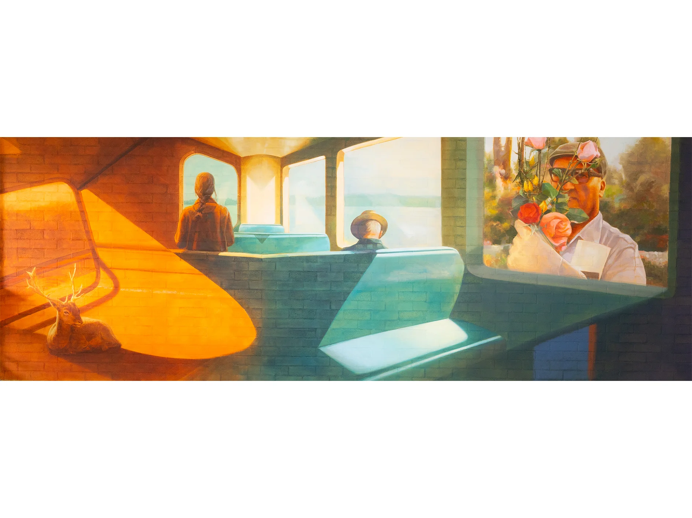
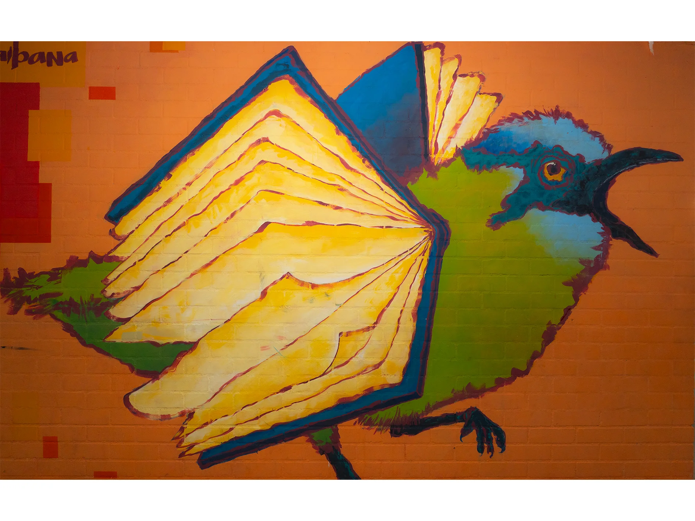
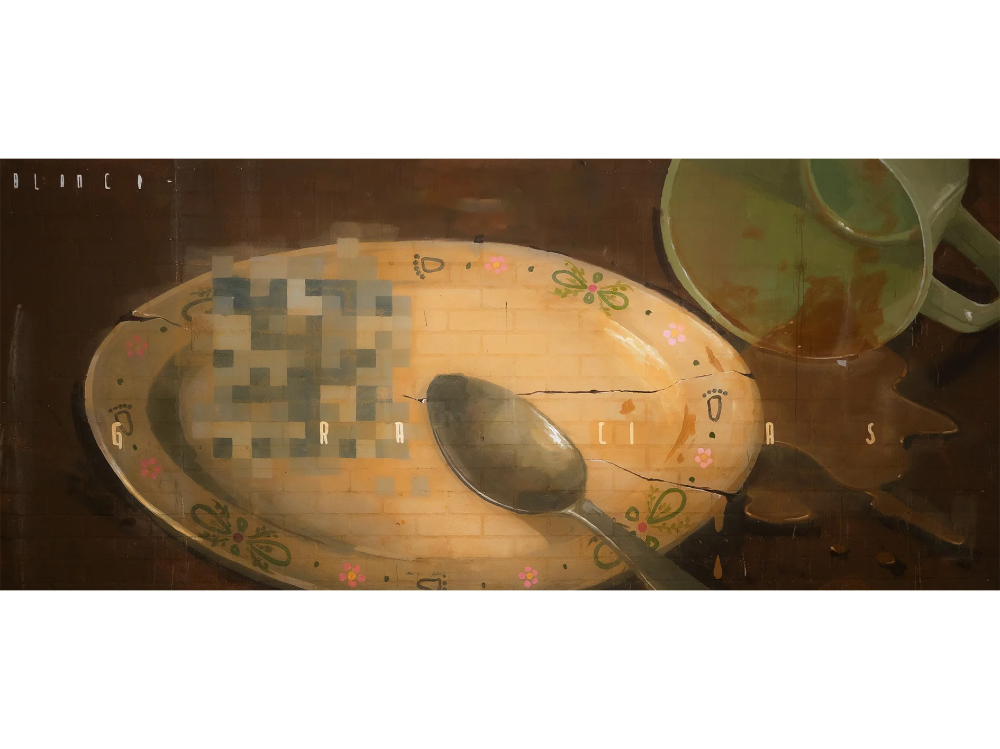

MURALES DE LA INSTITUCIÓN
Galería Visual
Un recorrido por el legado de Héctor Abad Gómez y los valores de nuestra institución plasmados en el arte urbano.
NIQUI DICE:
¡Bienvenido a la galería de murales! Aquí podrás encontrar las 42 obras expuestas en la institución. Haz clic en cualquiera para conocer su historia.
Movilidad Humana
Refleja el tránsito, la búsqueda de oportunidades y los caminos recorridos por las comunidades en constante movimiento, honrando el derecho a un lugar seguro.





Migración
Una mirada empática hacia quienes dejan su tierra atrás. Estos murales celebran la valentía de los migrantes y el enriquecimiento cultural que traen consigo.
Inclusión
Abrazamos a todos. Esta amplia colección representa la inclusión en todas sus formas, abarcando desde la equidad de género hasta el reconocimiento y respeto profundo por nuestras comunidades indígenas.
Diversidad
La belleza radica en nuestras diferencias. Un homenaje a la pluralidad de pensamientos, colores, formas de amar y de vivir que conforman el tejido de nuestra institución.